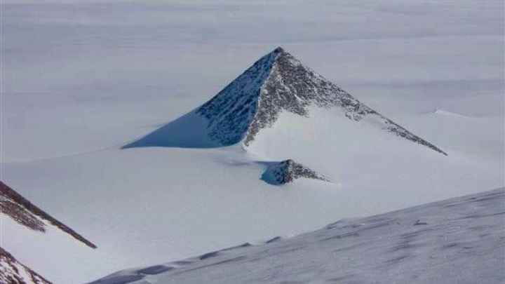
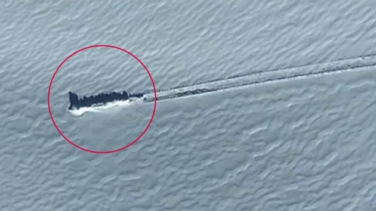
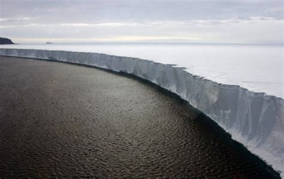

Antarktika) merupakan benua yang meliputi Kutub Selatan Bumi, hampir seluruhnya terletak di Lingkar Antarktika dan dikelilingi oleh Samudra Pasifik, Samudra Atlantik dan Samudra Hindia. Dengan luas 14.0 juta km2 (5.4 juta sq mi), antarktika adalah benua terluas kelima setelah Eurasia, Afrika, Amerika Utara, dan Amerika Selatan. Sebagai perbandingan, Antarktika hampir dua kali ukuran Australia. Sekitar 98% dari Antarktika ditutupi oleh es yang rata-rata ketebalan minimal 1,9 km,[3], seluruh daratan meluas tetapi di bagian utara mencapai Semenanjung Antarktika. Antarktika memiliki kelembaban rata-rata terendah, suhu rata-rata terendah di antara semua benua di bumi, benua tertandus, benua berangin terkencang, dan memiliki elevasi rata-rata tertinggi dari semua benua.[4] Antarktika dianggap sebagai gurun, dengan curah hujan hanya 200 mm (8 inci) di sepanjang pantai dan jauh lebih sedikit di pedalaman.[5] Tempat terdingin di muka bumi ini sebagian besar tertutup es sepanjang tahun mencapai -89 °C (-129 °F). Populasinya terkecil jauh di bawah yang lain (umumnya dihuni oleh para peneliti dan ilmuwan untuk batas waktu tertentu saja) sekitar 1000 sampai 5000 orang.[6] Hanya organisme yang dapat hidup dan beradaptasi di suhu dingin termasuk berbagai jenis fungi, alga, bakteri, protista, tumbuhan, selain itu hewan seperti penguin, nematoda, anjing laut. Vegetasi yang ada hanya tundra.
Seperti yang kita ketahui, Antartika selalu dikelilingi oleh es dan teori konspirasi. Tentu saja hal ini tidak mengejutkan mengingat bahwa Antartika adalah benua yang paling terpencil dan misterius di planet ini.Pada kenyataannya, mustahil untuk tinggal di sana tanpa peralatan khusus dan dukungan dari manusia lain. Mulai dari alien hingga UFO, pangkalan rahasia milik Nazi, dan beberapa piramida abnormal, berikut beberapa teori konspirasi tentang benua Antartika yang harus kamu ketahui.
Terdapat piramida yang dibangun oleh beberapa peradaban kuno.
Sedikit janggal, karena tidak ada catatan yang dapat menunjukkan bekas peradaban kuno di Antartika. Selain itu, pembangunan besar-besaran seperti itu pasti akan membutuhkan sumber daya dan tenaga manusia yang sangat banyak.Akhirnya beberapa orang dengan teori konspirasi muncul dan mengklaim bahwa piramida itu dibangun oleh beberapa peradaban kuno yang belum ditemukan. Peradaban itu, menurut mereka, telah ada di Antartika sejak 100 juta tahun yang lalu.Mereka mengatakan kalau pada saat itu Antartika masih berada di garis khatulistiwa, sehingga kondisinya masih sangat memungkinkan untuk membangun sebuah piramida. Mereka juga menambahkan kalau pemerintah berusaha menyembunyikan informasi ini dan bahkan telah memblokir gambar-gambar piramida yang terdapat di Google Earth.Namun para ilmuwan membantah teori ini, sembari menjelaskan kalau "piramida" itu adalah sebuah gunung tanduk atau nunatak. Gunung tanduk terbentuk setelah erosi yang menyapu sisi gunung sehingga membuatnya tampak seperti piramida, sedangkan nunatak adalah kategori gunung yang begitu tinggi sampai bagian atasnya tertutup salju.Seperti yang dilansir dari laman Thought Catalog, piramida-piramida ini tidak mungkin dibangun oleh peradaban kuno, karena Antartika sudah berada di Kutub Selatan sejak 100 juta tahun yang lalu. Juga, diperkirakan kalau spesies manusia paling awal baru muncul dua juta tahun yang lalu.Teori yang mungkin tersisa adalah bahwa apa yang mereka sebut sebagai "piramida" ini hanya bisa dibangun oleh dinosaurus. Namun, tidak ada bukti juga kalau dinosaurus mampu membangun piramida-piramida tersebut.
Ada UFO yang disembunyikan oleh Nazi di Antartika.
Teori konspirasi lain yang melibatkan Nazi dan Antartika menjelaskan kalau mereka menyembunyikan UFO di suatu tempat di Antartika. Teori ini bahkan menyebutkan kalau UFO milik Nazi tersebut ada kaitannya dengan piramida yang telah dibahas pada poin sebelumnya. Mereka yang percaya dengan teori ini bersikeras kalau Nazi mengoperasikan UFO secara rahasia di Antartika selama Perang Dunia II. Pasukan Amerika dan Inggris mencoba menghancurkan pangkalan itu berulang kali selama perang tetapi tidak berhasil. Mereka hanya berhasil menghancurkannya setelah menjatuhkan bom atom di pangkalan tersebut pada tahun 1958. Para ahli teori konspirasi ini menambahkan kalau Nazi berhasil menghancurkan pesawat Amerika selama operasi ini. Gagasan ini dianggap salah karena Nazi tidak pernah memiliki pangkalan atau kepentingan militer apa pun di Antartika. Seperti yang sudah disebutkan sebelumnya, mereka hanya pergi ke Antartika dengan satu kapal untuk mencari tempat perburuan paus. Mereka tidak memiliki persediaan yang cukup untuk membangun sebuah markas rahasia. Dilansir dari laman Vice, operasi yang mereka sebut untuk mengusir Nazi dari pangkalan rahasia UFO sebenarnya adalah pelatihan militer Amerika yang sedang mensimulasikan invasi Uni Soviet. Simulasi ini melibatkan 13 kapal, 33 pesawat terbang, dan 4.700 tentara.Elegan, Nazi juga tidak pernah menembak jatuh pesawat Amerika selama pelatihan, karena sedari awal tidak pernah ada Nazi di sana. Terakhir, bom atom yang diduga dipakai untuk menghancurkan pangkalan tersebut sebenarnya meledak 2.400 kilometer di lepas pantai Antartika.Walaupun sudah jelas, para ahli teori konspirasi ini tetap bersikeras kalau Nazi memang memiliki UFO di suatu tempat di Antartika dan menggunakan teknologi tersebut untuk membuat senjata alien yang kemudian disembunyikan di Antartika, Amerika Selatan, dan Arktik.
Antartika tidak pernah ada.
Ada sebuah teori konspirasi yang lebih aneh dari teori-teori di atas, yang menyebutkan kalau seluruh Antartika dan Kutub Selatan tidak pernah ada. Keyakinan ini sangat terkenal di kalangan "penganut kepercayaan" Bumi datar atau flat-earth society. Para flat-earthers ini percaya kalau Kutub Utara berada di pusat dunia sedangkan Kutub Selatan mengelilingi Bumi. Menurut para flat-earthers, seperti yang dikutip dari laman Atlantean Conspiracy, Antartika sebenarnya adalah sebuah dinding tebal yang memiliki tinggi sekitar 30-60 meter dan mengelilingi planet kita. Dinding tersebut menghentikan semua "benda" agar tidak jatuh ke tepi Bumi. Para flat-earthers ini menambahkan kalau mereka tidak dapat mengonfirmasi keberadaan tembok tersebut karena pemerintah dunia dan PBB memiliki zona larangan terbang dan larangan berlayar di sekitar Antartika. Para ahli teori konspirasi percaya kalau Kapten Cook dari Inggris adalah satu dari sedikit manusia yang pernah melihat tembok itu, selain dari agen-agen pemerintah tentunya.Menurut mereka, seharusnya Kapten Cook melaporkan kalau ia telah melihat tembok besar selama tiga pelayaran yang ia lakukan ke Antartika. Dinding tersebut menutupi seluruh garis pantai, dan dia tidak bisa mendarat di mana pun karena terlalu tinggi untuk didaki.